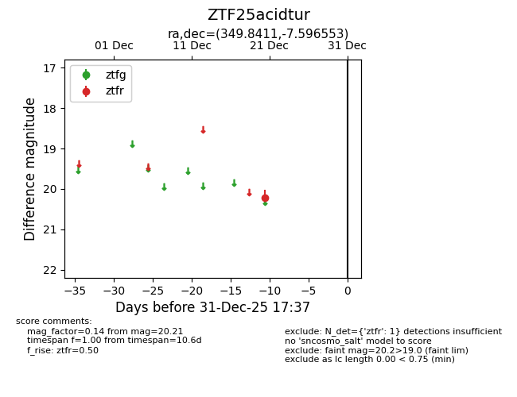
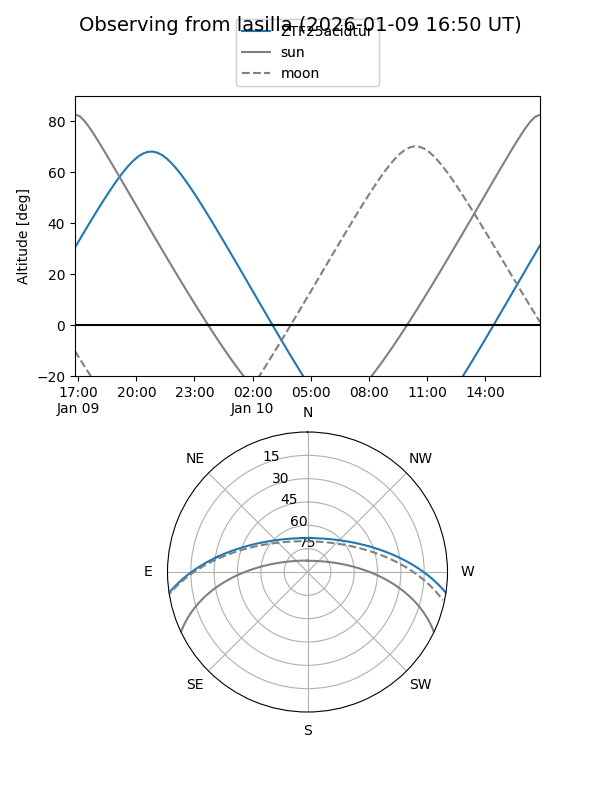
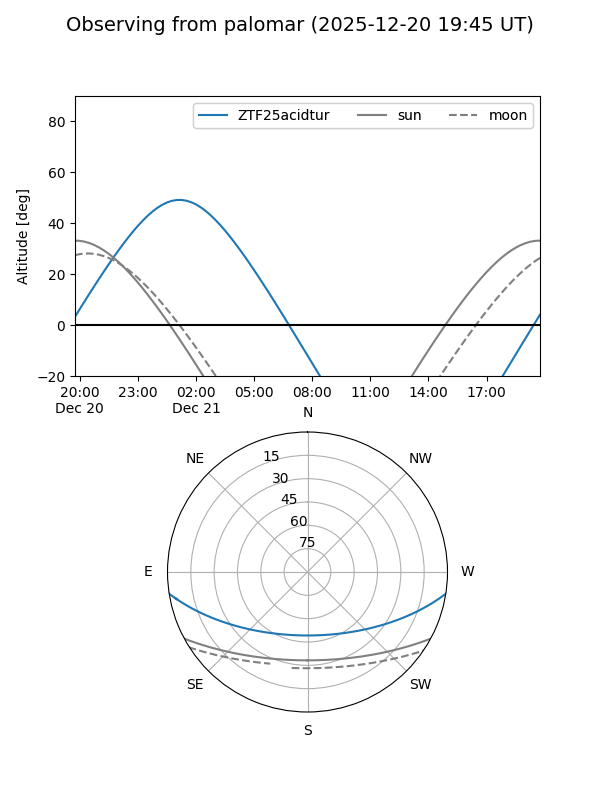

ZTF25acidtur
Target ZTF25acidtur at 2025-12-21 04:23
Aliases and brokers:
FINK: fink-portal.org/ZTF25acidtur
Lasair: lasair-ztf.lsst.ac.uk/objects/ZTF25acidtur
ALeRCE: alerce.online/object/ZTF25acidtur
alt names
ZTF25acidtur (ztf,fink_ztf)
Coordinates:
equatorial (ra, dec) = 349.8411,-7.59655
equatorial (HMS+DMS) = 23:19:21.87,-07:35:47.59
galactic (l, b) = (70.5183,-60.71734)
Flags:
Photometry:
last ztfr=20.21
1 ztfr detections
Lightcurve

Visibility


Additional plots